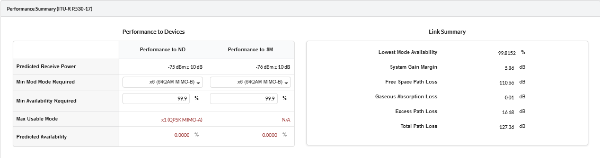

Reviewing Performance and Adjusting Configuration (PMP)¶
Review the performance of the link and adjust the antenna at the Subscriber Module, confirm that the selected equipment meets the performance objectives:
Click which is left side of the in the left panel of the page.
This displays the PMP Links added to the project.
Click on which is left side of the Golf Club : 090 PMP Network Device. This lists all the Subscriber Module attached to the Network Device.
Click on Billing Street. This displays all the properties of the Subscriber Module.
The right hand side of the window shows the Profile, Performance Summary and Performance Details section in this page.
View the performance of the link between the Network Device and the Subscriber Module.
Insert the required performance objective of x6 (64QAM MIMO-B) at both ends of the link, using the Min Mod Mode Required field.
Set the Min Availability Required to 99.9% at both ends of the link
The results shown are using the ITU-R P.530-17 propagation model
Observe that the Max Usable Mode values and Predicted Availability are now red because they are less than the required values.

Performance Unacceptable at Both Ends of PMP Link¶
Adjust the configuration to make the performance at both ends acceptable.
Change the Antenna Height of Billings Street SM to 23 meters.
Click
If any properties of the SM are changed, the configuration to update the calculated results.